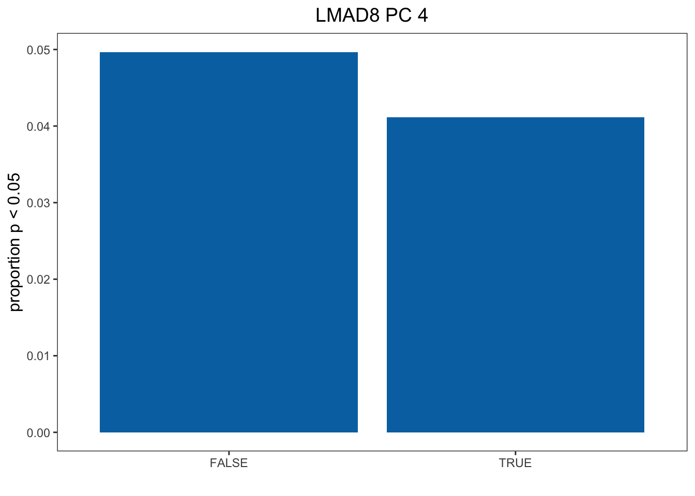

Last updated: 2020-02-23
Checks: 7 0
Knit directory: Blancetal/analysis/
This reproducible R Markdown analysis was created with workflowr (version 1.4.0). The Checks tab describes the reproducibility checks that were applied when the results were created. The Past versions tab lists the development history.
Great! Since the R Markdown file has been committed to the Git repository, you know the exact version of the code that produced these results.
Great job! The global environment was empty. Objects defined in the global environment can affect the analysis in your R Markdown file in unknown ways. For reproduciblity it’s best to always run the code in an empty environment.
The command set.seed(20200217) was run prior to running the code in the R Markdown file. Setting a seed ensures that any results that rely on randomness, e.g. subsampling or permutations, are reproducible.
Great job! Recording the operating system, R version, and package versions is critical for reproducibility.
Nice! There were no cached chunks for this analysis, so you can be confident that you successfully produced the results during this run.
Great job! Using relative paths to the files within your workflowr project makes it easier to run your code on other machines.
Great! You are using Git for version control. Tracking code development and connecting the code version to the results is critical for reproducibility. The version displayed above was the version of the Git repository at the time these results were generated.
Note that you need to be careful to ensure that all relevant files for the analysis have been committed to Git prior to generating the results (you can use wflow_publish or wflow_git_commit). workflowr only checks the R Markdown file, but you know if there are other scripts or data files that it depends on. Below is the status of the Git repository when the results were generated:
Ignored files:
Ignored: .DS_Store
Ignored: .RData
Ignored: .Rhistory
Ignored: .Rproj.user/
Ignored: data/.DS_Store
Ignored: output/.DS_Store
Ignored: output/Identifying_Selected_Genes/.DS_Store
Ignored: output/Selection_on_Expression_of_Cold_Response_Genes/.DS_Store
Note that any generated files, e.g. HTML, png, CSS, etc., are not included in this status report because it is ok for generated content to have uncommitted changes.
These are the previous versions of the R Markdown and HTML files. If you’ve configured a remote Git repository (see ?wflow_git_remote), click on the hyperlinks in the table below to view them.
| File | Version | Author | Date | Message |
|---|---|---|---|---|
| Rmd | ffeebb7 | jgblanc | 2020-02-23 | Cold Response Analysis |
| Rmd | 7a48058 | jgblanc | 2020-02-20 | got cold gene pvals |
| Rmd | 5d4228b | jgblanc | 2020-02-18 | starting cold |
| Rmd | f3e5cba | jgblanc | 2020-02-17 | Adding Expression |
The goal of this analysis is to determine if genes that have been shown to be differentially expressed in response to cold treatment are enriched for genes whose expression is under selection.
First, read in the Avila et al. differential expression data and get the names of the genes used in their analysis.
cold <- read.csv("../data/Cold.csv", header = F)
cold <-cold[,2:19]
colnames(cold) <- c("V3_Gene_Name","V4_Gene_Name","Arabidopsis_Ortholog","Rice_Ortholog","Cold_1D_CG60_Means","Cold_1D_CG102_Means","Control_1D_CG60_Means","Control_1D_CG102_Means","FDR_1D_Genotype","FDR_1D_Treatment","FDR_\
1D_Interaction","Cold_4D_CG60_Means","Cold_4D_CG102_Means","Control_4D_CG60_Means","Control_4D_CG102_Means","FDR_4D_Genotype","FDR_4D_Treatment","FDR_4D_Interaction")
cold_names <- cold$V3_Gene_NameWe need to pick only the genes for which we have expression data for. To do this we will load the names for the genes we have for each tissue and take the overlap with the Avila data.
kern_genes <- read.table("../data/Mean_centered_expression/Kern.txt", nrows = 1)
gshoot_genes <- read.table("../data/Mean_centered_expression/GShoot.txt", nrows = 1)
groot_genes <- read.table("../data/Mean_centered_expression/GRoot.txt", nrows = 1)
base_genes <- read.table("../data/Mean_centered_expression/L3Base.txt", nrows = 1)
tip_genes <- read.table("../data/Mean_centered_expression/L3Tip.txt", nrows = 1)
lmad8_genes <- read.table("../data/Mean_centered_expression/LMAD8.txt", nrows = 1)
lman8_genes <- read.table("../data/Mean_centered_expression/LMAN8.txt", nrows = 1)
lmad26_genes <- read.table("../data/Mean_centered_expression/LMAD26.txt", nrows = 1)
lman26_genes <- read.table("../data/Mean_centered_expression/LMAN26.txt", nrows = 1)olap_kern <- Reduce(intersect, list(unname(unlist(kern_genes[1,])), cold_names))
olap_gshoot <- Reduce(intersect, list(unname(unlist(gshoot_genes[1,])), cold_names ))
olap_groot <- Reduce(intersect, list(unname(unlist(groot_genes[1,])), cold_names ))
olap_base <- Reduce(intersect, list(unname(unlist(base_genes[1,])), cold_names))
olap_tip <- Reduce(intersect, list(unname(unlist(tip_genes[1,])), cold_names ))
olap_lmad8 <-Reduce(intersect, list(unname(unlist(lmad8_genes[1,])), cold_names ))
olap_lman8 <- Reduce(intersect, list(unname(unlist(lman8_genes[1,])), cold_names))
olap_lmad26 <- Reduce(intersect, list(unname(unlist(lmad26_genes[1,])), cold_names))
olap_lman26 <- Reduce(intersect, list(unname(unlist(lman26_genes[1,])), cold_names ))Now we will select select the expression values for the Avila genes from our data set and run our test for selection on all of them (including both differentially and non-differentially expressed ones). Below I am only showing the code for Kernel tissue - by loading the expression for a different tissue and changing the “olap_tissue” variable to the correct tissue name you can run this analysis for all tissues. To save time during the knitting process, I commented out this slow step and pre-loaded the file.
# Select tissue and genes
exp <- read.table("../data/Mean_centered_expression/Kern.txt") # Change for different tissue
df1 <- exp %>%
select(olap_kern) # Change for differnt tissue Test for selection
## Pick Correct Kinship Matrix
myF <- read.table('../data/Kinship_matrices/F_Kern.txt')
## Get Eigen Values and Vectors
myE <- eigen(myF)
E_vectors <- myE$vectors
E_values <- myE$values
## Make new matrix to collect Z values
df2 <- data.frame(matrix(ncol=ncol(df1), nrow=nrow(df1)))
colnames(df2) <- colnames(df1[1:ncol(df1)])
rownames(df2) <- rownames(df1)
## Calculate Q values by multiplying the mean-centered expression value by each eigen vector
#for (i in 1:ncol(df2)) {
# mean_centered_data <- t(as.matrix(as.numeric(df1[,i])))
# for (k in 1:nrow(df2)){
# u <- as.matrix(as.numeric(E_vectors[,k]))
# value <- mean_centered_data %*% u
# df2[k,i] <- value
# }
#}
df2 <- read.table("../output/Selection_on_Expression_of_Cold_Response_Genes/intermediate.txt")
## Get the square root of the Eigen values
de <- data.frame(matrix(nrow = nrow(df1),ncol = 2))
de$Egien_values <- E_values
de$Sqrt_EV <- sqrt(de$Egien_values)
## Calculate C-values by dividing Q values by the square root of the eigen values
df4 <- data.frame(matrix(ncol=ncol(df2),nrow=nrow(df2)))
for (i in 1:ncol(df2)){
df4[,i] <- (df2[,i] / de$Sqrt_EV)
}
## Calculate F-values by dividing variances - for each PC individually
F_values <- data.frame(matrix(ncol=ncol(df2), nrow = 5))
for (j in 1:ncol(df2)){
for (i in 1:5){
q <- df4[i,j]
t <- df4[11:20,j]
var_q <- (q^2)
var_t <- mean(t^2)
F_value <- var_q / var_t
F_values[i,j] <- F_value
}
}
## Calculate P-values from recorded F values
P_values_ind <- data.frame(matrix(ncol=ncol(df2), nrow =1))
for (j in 1:ncol(F_values)){
for (r in 1:5) {
f_stat <- F_values[r, j]
p_value <- pf(q=f_stat, df1=1, df2=10, lower.tail=FALSE)
P_values_ind[r, j] <- p_value
}
}Now we have the p-values for all of the genes that overlap between our dataset and Avila et al. The p-value results for all of the tissus are in the “../output/Selection_on_Expression_of_Cold_Response_Genes/” folder.The next step is to determine if differentially expressed genes are more likely to be under selection in every PC/Tissue combination. To do this we will use a chi-squared test.
Again, the code below is specific to the Kernel tissue but can be modified to work for each tissue type.
Cold <- cold %>%
select(V3_Gene_Name, V4_Gene_Name, FDR_1D_Treatment, FDR_4D_Treatment)
names <- as.data.frame(colnames(exp)) # Here exp is expression of Kern
colnames(names) <- "V3_Gene_Name"
Cold <- inner_join(names, Cold)Now will will add a column to our dataframe that indicates if the gene is differentially expressed in cold and then divide into two dataframes.
sig_DE <- function(Cold) {
Cold$Sig <- FALSE
Cold[is.na(Cold)] <- NA
for (i in 1:nrow(Cold)) {
a <- Cold[i,3]
b <- Cold[i,4]
if (is.na(a)) {a <- 1}
if (is.na(b)) {b <- 1}
if (a < 0.05) {Cold[i,5] <- TRUE }
if (b < 0.05) {Cold[i,5] <- TRUE}
}
return(Cold)
}
Cold <- sig_DE(Cold)Finally, we can do the Chi-squared test
P_vals <- as.data.frame(t(P_values_ind))
# Fo other tissues uncomment next line and change tissue name
#P_vals<- as.data.frame(t(read.table("../output/Selection_on_Expression_of_Cold_Response_Genes/Kern.txt")))
## Chi-squared test
run_chi_sq <- function(Cold, P_vals) {
chi_pvals <- as.data.frame(matrix(ncol=5,nrow = 1))
cont_tables <- list()
dat <- Cold %>%
select(Sig)
for (i in 1:ncol(chi_pvals)) {
x <- P_vals[,i]
dat$Pvals <- as.data.frame(x)
dat$Cutoff <- FALSE
for (j in 1:nrow(dat)) {
p <- dat[j,2]
if (p < 0.05) {dat[j,3] <- TRUE }
}
tbl <- table(dat$Sig, dat$Cutoff)
cont_tables[[i]] <- tbl
chi <- chisq.test(tbl)
chi_pvals[1,i] <- chi$p.value
}
return(list(cont_tables,chi_pvals))
}
out <- run_chi_sq(Cold,P_vals)
chi_pvals <- out[[2]]
colnames(chi_pvals) <- c("PC1", "PC2", "PC3", "PC4", "PC5")
kable(chi_pvals)| PC1 | PC2 | PC3 | PC4 | PC5 |
|---|---|---|---|---|
| 0.0266736 | 0.6817413 | 0.1352914 | 0.7499593 | 0.4013942 |
These are the undjusted p-values for our chi-square test for independence between the two categorical variables (Genes under selection and DE cold genes). From the p-value alone we don’t know what direction the enrichment is in (Are DE genes more or less likely to be under selection). Below is the results of the chi-square test for the 5 PC’s in each of the 9 tissues (Table S3) - this table can be generated my running the code above for each tissue type.
chi_all <- read.table("../output/Selection_on_Expression_of_Cold_Response_Genes/Chi_sqr_pvals.txt")
kable(chi_all)| PC1 | PC2 | PC3 | PC4 | PC5 | |
|---|---|---|---|---|---|
| Kern | 0.0266736 | 0.6817413 | 0.1352914 | 0.7499593 | 0.4013942 |
| GShoot | 0.3068080 | 0.9968723 | 0.1215469 | 0.4562872 | 0.8645661 |
| GRoot | 0.2951578 | 0.0090328 | 0.8382773 | 0.1424532 | 0.7564260 |
| L3Base | 0.7707657 | 0.0319442 | 0.1313966 | 0.4700622 | 0.9318617 |
| L3Tip | 1.0000000 | 0.7093509 | 0.0616248 | 0.8706036 | 0.8329363 |
| LMAD8 | 0.4153836 | 0.2623356 | 0.0874473 | 0.0396060 | 0.6481210 |
| LMAN8 | 0.7559163 | 1.0000000 | 0.3358749 | 0.7682853 | 0.9080514 |
| LMAD26 | 0.0966230 | 0.1466515 | 0.9486752 | 0.5582359 | 0.0010293 |
| LMAN26 | 0.6305450 | 0.2987301 | 0.0966033 | 0.3345099 | 0.5331202 |
Now we want to plot Figure 3 in the main text. First we will look at LMAD26/PC5 which has a p-value of 0.00103 as an example of PC/tissue combination where selected genes are enriched for DE cold genes. To run this code we need the p-values and the contigency table of selected genes vs DE genes. The key to generating these figures for every tissue/PC combination is to load the correct p-values and use the “run_chi_sq” function to extract the contingency table.
dat <- read.table("../output/Selection_on_Expression_of_Cold_Response_Genes/LMAD26.txt") # Pick Tissuee
Cold <- cold %>%
select(V3_Gene_Name, V4_Gene_Name, FDR_1D_Treatment, FDR_4D_Treatment)
names <- as.data.frame(olap_lmad26) # Pick Tissue
colnames(names) <- "V3_Gene_Name"
Cold <- inner_join(names, Cold)
Cold <- sig_DE(Cold) # Get which genes are DE
# Get contingency table
out <- run_chi_sq(Cold, t(dat))
dt <- out[[1]][[5]] # Pick correct contingency table
df <- as.data.frame(as.table(dt))Plot Bar Chart
colnames(df) <- c("CR", "Sel", "Freq")
df1 <- subset(df, Sel == TRUE)
df1[1,3] <- df1[1,3] / sum(df1[1,3] + df[1,3])
df1[2,3] <- df1[2,3] / sum(df1[2,3] + df[2,3])
col <- c( "#0072B2")
pl1 <- ggplot(data = df1, aes(x = CR, y = Freq)) + geom_bar(stat="identity", fill = col) + ylab("proportion p < 0.05") + xlab("") + theme_bw() + theme(panel.grid.major = element_blank(), panel.grid.minor = element_blank(), axis.title.y = element_text(size=12), axis.title.x = element_text(size=12), legend.position = "right", legend.title = element_text(size = 12), legend.text = element_text(size = 10)) + ggtitle("LMAD26 PC 5") + theme(plot.title = element_text(hjust = 0.5, size = 14))
pl1Plot Historgram
tdat <- as.data.frame(t(dat))
colnames(tdat) <- c("PC1", "PC2", "PC3", "PC4", "PC5")
df <- cbind(Cold, tdat)
mysig = subset(df, Sig==TRUE)
sighist = hist(mysig$PC5, plot=FALSE)
mynot = subset(df, Sig==FALSE)
nothist = hist(mynot$PC5, plot=FALSE)
combinedHist = rbind(nothist$density, sighist$density)
x <- t(combinedHist)
colnames(x) <- c("Not cold-response", "Cold-response")
m <- melt(x)
pl2 <- ggplot(data = m, aes(x = Var1/10, y = value, fill = Var2)) + geom_bar(stat="identity",position="dodge") + scale_fill_manual(name = "", values = c("#CC79A7", "#F0E442")) + theme_classic() + ylab("proportion") + xlab("") + scale_x_continuous(breaks=seq(0, 1, 0.1)) + theme(legend.position = c(0.8, 0.9)) + ggtitle("LMAD26 PC5") + theme(plot.title = element_text(hjust = 0.5, size = 14), axis.title.y = element_text(size=12), legend.text = element_text(size=8), legend.key.size = unit(0.8, "line"))
pl2Now we will plot Figure 3 CD
dat <- read.table("../output/Selection_on_Expression_of_Cold_Response_Genes/LMAD8.txt") # Pick Tissue
Cold <- cold %>%
select(V3_Gene_Name, V4_Gene_Name, FDR_1D_Treatment, FDR_4D_Treatment)
names <- as.data.frame(olap_lmad8) # Pick Tissue
colnames(names) <- "V3_Gene_Name"
Cold <- inner_join(names, Cold)
Cold <- sig_DE(Cold) # Get which genes are DE
# Get contingency table
out <- run_chi_sq(Cold, t(dat))
dt <- out[[1]][[4]] # Pick correct contingency table out[[1]][[x]] -> x is the PC you want to look at
df <- as.data.frame(as.table(dt))Plot Bar Chart
colnames(df) <- c("CR", "Sel", "Freq")
df1 <- subset(df, Sel == TRUE)
df1[1,3] <- df1[1,3] / sum(df1[1,3] + df[1,3])
df1[2,3] <- df1[2,3] / sum(df1[2,3] + df[2,3])
col <- c( "#0072B2")
pl1 <- ggplot(data = df1, aes(x = CR, y = Freq)) + geom_bar(stat="identity", fill = col) + ylab("proportion p < 0.05") + xlab("") + theme_bw() + theme(panel.grid.major = element_blank(), panel.grid.minor = element_blank(), axis.title.y = element_text(size=12), axis.title.x = element_text(size=12), legend.position = "right", legend.title = element_text(size = 12), legend.text = element_text(size = 10)) + ggtitle("LMAD8 PC 4") + theme(plot.title = element_text(hjust = 0.5, size = 14))
pl1
tdat <- as.data.frame(t(dat))
colnames(tdat) <- c("PC1", "PC2", "PC3", "PC4", "PC5")
df <- cbind(Cold, tdat)
mysig = subset(df, Sig==TRUE)
sighist = hist(mysig$PC5, plot=FALSE)
mynot = subset(df, Sig==FALSE)
nothist = hist(mynot$PC5, plot=FALSE) # Change to correct PC
combinedHist = rbind(nothist$density, sighist$density)
x <- t(combinedHist)
colnames(x) <- c("Not cold-response", "Cold-response")
m <- melt(x)
pl2 <- ggplot(data = m, aes(x = Var1/10, y = value, fill = Var2)) + geom_bar(stat="identity",position="dodge") + scale_fill_manual(name = "", values = c("#CC79A7", "#F0E442")) + theme_classic() + ylab("proportion") + xlab("") + scale_x_continuous(breaks=seq(0, 1, 0.1)) + theme(legend.position = c(0.8, 0.9)) + ggtitle("LMAD8 PC4") + theme(plot.title = element_text(hjust = 0.5, size = 14), axis.title.y = element_text(size=12), legend.text = element_text(size=8), legend.key.size = unit(0.8, "line"))
pl2
sessionInfo()R version 3.5.1 (2018-07-02)
Platform: x86_64-apple-darwin15.6.0 (64-bit)
Running under: macOS High Sierra 10.13.6
Matrix products: default
BLAS: /Library/Frameworks/R.framework/Versions/3.5/Resources/lib/libRblas.0.dylib
LAPACK: /Library/Frameworks/R.framework/Versions/3.5/Resources/lib/libRlapack.dylib
locale:
[1] en_US.UTF-8/en_US.UTF-8/en_US.UTF-8/C/en_US.UTF-8/en_US.UTF-8
attached base packages:
[1] stats graphics grDevices utils datasets methods base
other attached packages:
[1] reshape2_1.4.3 knitr_1.23 dplyr_0.8.1 ggplot2_3.2.1
loaded via a namespace (and not attached):
[1] Rcpp_1.0.3 highr_0.8 compiler_3.5.1 pillar_1.4.2
[5] git2r_0.25.2 plyr_1.8.4 workflowr_1.4.0 tools_3.5.1
[9] digest_0.6.22 evaluate_0.14 lifecycle_0.1.0 tibble_2.1.3
[13] gtable_0.3.0 pkgconfig_2.0.3 rlang_0.4.1 yaml_2.2.0
[17] xfun_0.7 withr_2.1.2 stringr_1.4.0 fs_1.3.1
[21] rprojroot_1.3-2 grid_3.5.1 tidyselect_0.2.5 glue_1.3.1
[25] R6_2.4.1 rmarkdown_1.13 farver_2.0.1 purrr_0.3.2
[29] magrittr_1.5 whisker_0.3-2 backports_1.1.5 scales_1.1.0
[33] htmltools_0.3.6 assertthat_0.2.1 colorspace_1.4-1 labeling_0.3
[37] stringi_1.4.3 lazyeval_0.2.2 munsell_0.5.0 crayon_1.3.4